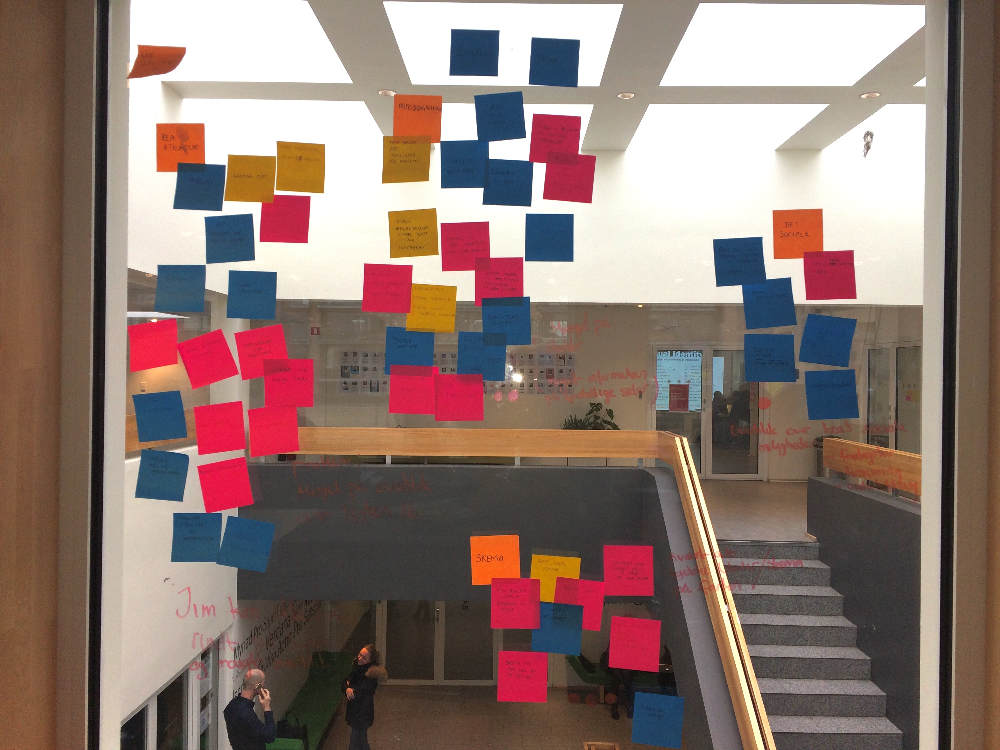
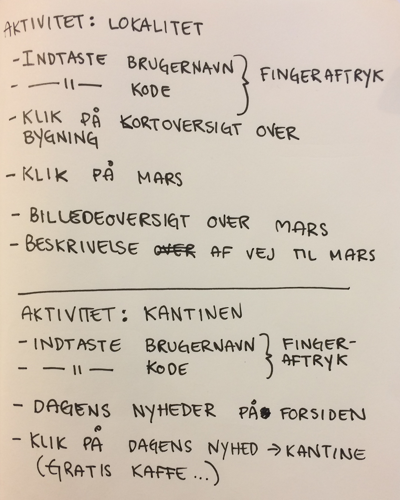
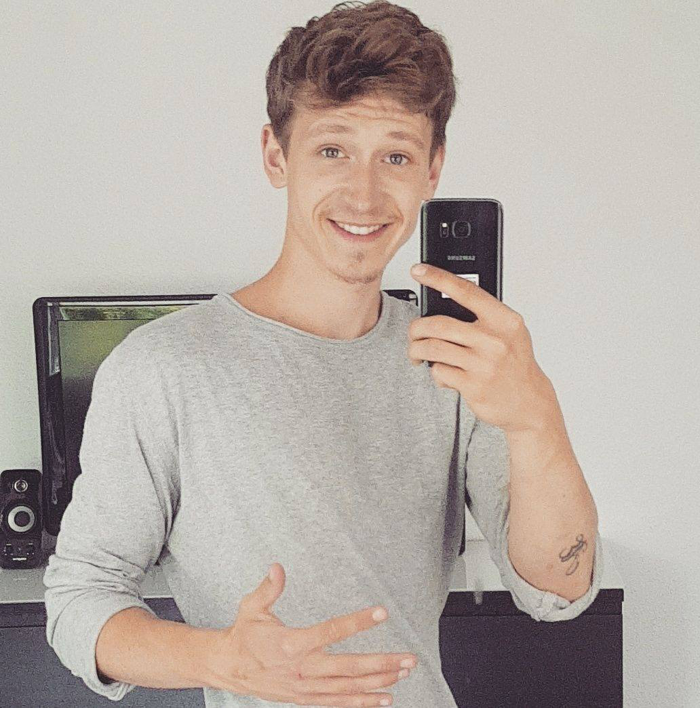

DOKUMENTIONSSITE // 1. SEMESTER // MMD EFTERÅR 2017
USEREXPERIENCE
Gruppemedlemmer |
| Navn: | Email: |
| Mette Frilander | mett643f@stud.kea.dk |
| Jennifer Olid | jenniferolid@gmail.om |
| Samoon Hewaddost | samoonh@hotmail.com |
| Biljnaz Karandja | binibiljnaz@hotmail.com |
| Cathrine Rasmussen | cathrinecamaras@gmail.com |
DALIY SCRUM
link til daliy scrumEXPERIENCE MAP
AKTIVITET
PERSONA
Jim Petersen

Alder:
22 år
By:
Dragør
Job:
Har et studiejob 7 timer om ugen, som tjener på en italiensk restaurant.
Fritid:
Til dagligt spiller Jim badminton i Dragørs lokale badmintonklub. Jim har spillet badminton siden han var 9 år. For to år siden afsluttede Jim Hf. Til dagligt studere Jim multimediedesign på KEA, her har han gået i halvandet år. Jim drømmer om at blive mediegrafiker. Når Jims fritid elsker han at gå i byen og ses med hans venner.
Familieforhold:
Jim er opvokset i Græsted hos sin mor som hedder Anette og hans far der hedder Bo, sammen med hans storebror som hedder Nikolai og hans lillesøster som hedder Alberte, samt deres to hunde Maggie og Buller. Jim ser sin familie ca. En gang om måneden.
Adfærd på sociale medier:
Jim bruger mest sin IPhone til at opdatere sig på de sociale medier, her starter han altid morgenen med at tjekke BT og på vej i skole bruger han rejseplanen. Når Jim skal i kontakt med sine venner, så bruger han snapchat og Facebook. Jim bruger ind i mellem tinder, men mest som underholdning, og for at lærer nye mennesker at kende.
Status:
Single